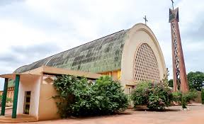

La Cathédrale notre Dame de Lourdes
Description et Historique: Situé entre la gare ferrovière et le marcé centrale de Bobo-Dioulasso,la Cathédrale notre Dame de Lourdes est un édifice religieux qui a été ouvert au culte dans les années 1961. Elle est classée parmis les patrimoines touristisques du Burkina Faso.construites en 1957, elle est d'une architecture moderne et fut dédiée à notre Dame de Lourdes.Elle ouvre ses portes en 1961 et on peut voir la sculpture des testaments anciens comme nouveaux sur les sièges,dans des styles mêlant artistiquement les styles traditionelles et contemporains.C'est une très belle Cathédrale qui doit absolument être visitée.